2022.07.13
松山英樹プロの歴史的偉業の影響か、はたまたパンデミックによる副産物か。ゴルフが、近年稀に見る活況を迎えています。こちらをご覧になっている方の中にも興味を持っている人は少なくないのではないでしょうか。はたまた、すでにレッスンを受ける腹づもりでいる人だっているかもしれません。ならば、迷わず進めたい場所があります。それが、『√d Golf Academy』。
体験レッスンが30分8万円（入会後は30分3万3000円）。一瞬、耳を疑い。一瞬、耳を疑いそうな料金設定です。ただ、結果に最大限コミットするとして、今や日本一高額なゴルフレッスンを謳いながらも、多くの人が殺到し半年以上予約待ちの状況が続いているほど。主宰するのは代表取締役にしてヘッドコーチも務める浦 大輔氏。今回は、人気の秘密や料金設定の裏に秘めた想いについてお聞きしました。
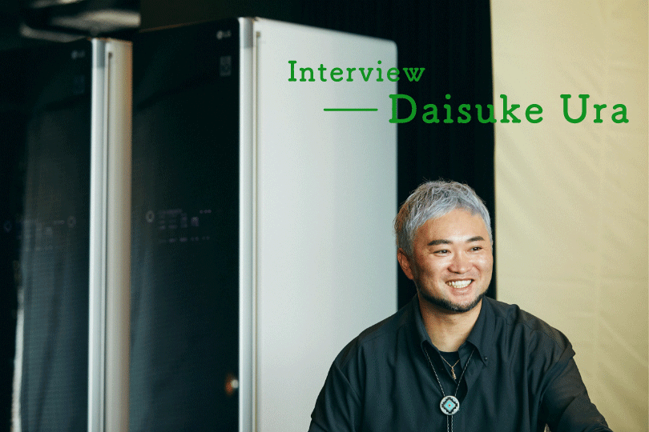
昨今、老若男女を問わず多くの方々がゴルフに強い関心を示しています。そして、日を追うごとに練習場やコースへと足を延ばす人も増加傾向に。当然ながらその状況を、浦氏は諸手を挙げて迎え入れています。
「多くの方々に関心を持ってもらえるのは、ゴルフ界に身を置く僕としても嬉しいですね。なにせ、男性も女性も、おじいちゃんもおばあちゃんも、男の子も女の子も同じ土俵で戦えますから。体を動かすスポーツではありますが知能戦でもある。単純にティーショットをフェアウェイのど真ん中に打っておけばいいというスポーツではないんです。カップの位置、グリーンの位置から逆算し、どのクラブでどの場所へどれほどの力で打つのが最適かを常に考えないといけません。不確定要素の強い自然や天候が相手ですから、誰もがフェアな戦いを楽しめます。それに、ゴルフは営業ツールとしても非常に強い。飲食の場よりもグッと距離を縮められます。なにせ、６時間もずっと一緒に熱中するわけですから」。
「多くの方々に関心を持ってもらえるのは、ゴルフ界に身を置く僕としても嬉しいですね。なにせ、男性も女性も、おじいちゃんもおばあちゃんも、男の子も女の子も同じ土俵で戦えますから。体を動かすスポーツではありますが知能戦でもある。単純にティーショットをフェアウェイのど真ん中に打っておけばいいというスポーツではないんです。カップの位置、グリーンの位置から逆算し、どのクラブでどの場所へどれほどの力で打つのが最適かを常に考えないといけません。不確定要素の強い自然や天候が相手ですから、誰もがフェアな戦いを楽しめます。それに、ゴルフは営業ツールとしても非常に強い。飲食の場よりもグッと距離を縮められます。なにせ、６時間もずっと一緒に熱中するわけですから」。
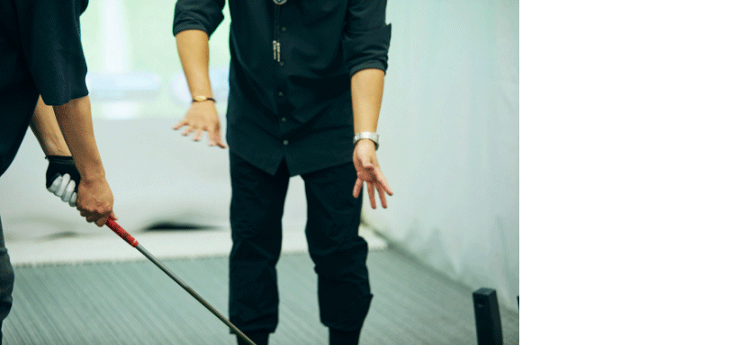
そして、今も昔も変わらず、大人として嗜んでおきたい教養のひとつとも。
「ゴルフは、運動神経の有無や経験の深さを問わず仲を深められる、いわば大人の社交場なんですよね。もとは明確なドレスコードがあり知っておくべきマナーも少なくない。それなりの人間じゃないとゴルフ場に行けなかったわけです。それもあってか、ゴルフをやってるという時点で、相応の教養をお持ち、という目で見てくれますよね」。
「ゴルフは、運動神経の有無や経験の深さを問わず仲を深められる、いわば大人の社交場なんですよね。もとは明確なドレスコードがあり知っておくべきマナーも少なくない。それなりの人間じゃないとゴルフ場に行けなかったわけです。それもあってか、ゴルフをやってるという時点で、相応の教養をお持ち、という目で見てくれますよね」。
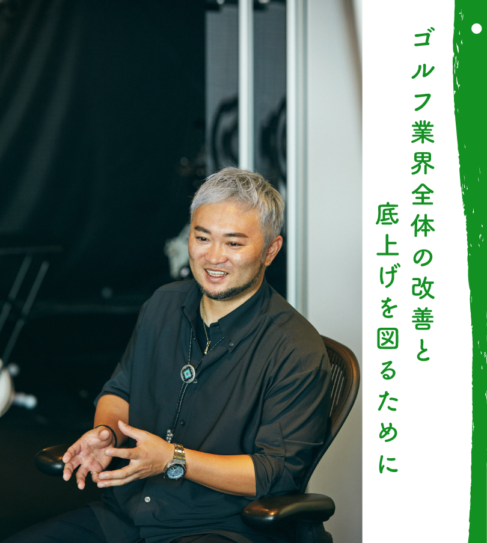
とはいえ、人気の裏には危惧すべき問題点も多いと指摘します。
「僕は、ゴルフ界から離れていた3年の間に業界を客観的に見てきましたが、内情があまりにもひどい。ツアープロを頂点にヒエラルキー化した際、レッスンプロは下に位置するんですね。このままでは、そのうち1000円で習い放題なんてところもでかねない。レッスンプロの平均年収が230万といわれていますから、さらに値下げ競争をしていては身も蓋もありません。だから、レッスンプロの中にはあらぬ考えに走ってしまう人も少なくないんです」。
「僕は、ゴルフ界から離れていた3年の間に業界を客観的に見てきましたが、内情があまりにもひどい。ツアープロを頂点にヒエラルキー化した際、レッスンプロは下に位置するんですね。このままでは、そのうち1000円で習い放題なんてところもでかねない。レッスンプロの平均年収が230万といわれていますから、さらに値下げ競争をしていては身も蓋もありません。だから、レッスンプロの中にはあらぬ考えに走ってしまう人も少なくないんです」。
世間一般に感じる温度感とはウラハラに、根強くはびこる問題点を改善していかない限り、文化として根付くことは難しいと浦氏。
「例えばですけど、月7000円とか月1万円でレッスン受け放題というのは現状一般的。それに安住してしまっているから、日本の理論も遅々として進まないどころかレベルがどんどん下がっていくんです。様々な要素が絡み合っているからこそ面白いのがゴルフ。当然教える側も、スポーツ力学、行動心理学、スポーツバイオメカニクスなどが頭に入っていないといけません。現状に甘んじるのであれば、学ばなくていい分野もありますが発展は見込めませんよね。アメリカのレッスンプロなんて博士号レベルの人間ばかりですから。お客さんが喜ぶから値段を下げるのは、本人が勉強しない言い訳を作ってるにすぎないと思います」。
「例えばですけど、月7000円とか月1万円でレッスン受け放題というのは現状一般的。それに安住してしまっているから、日本の理論も遅々として進まないどころかレベルがどんどん下がっていくんです。様々な要素が絡み合っているからこそ面白いのがゴルフ。当然教える側も、スポーツ力学、行動心理学、スポーツバイオメカニクスなどが頭に入っていないといけません。現状に甘んじるのであれば、学ばなくていい分野もありますが発展は見込めませんよね。アメリカのレッスンプロなんて博士号レベルの人間ばかりですから。お客さんが喜ぶから値段を下げるのは、本人が勉強しない言い訳を作ってるにすぎないと思います」。
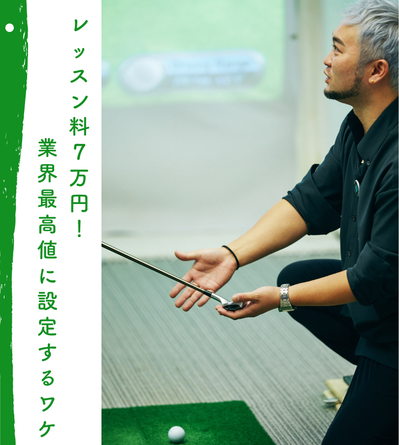
外から客観視することで見えてきた様々な課題。そこでまず着目したのはレッスンレベルの底上げ。着手したのは独自の理論の確立でした。
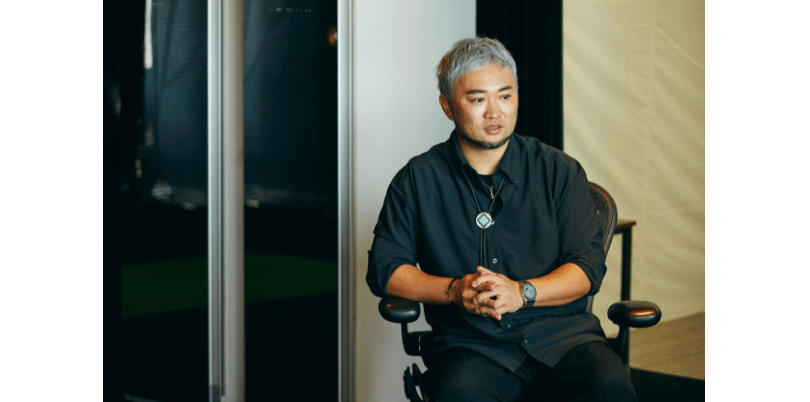
「風や地面の傾斜を計算し、コンディションと相談しながら14本のクラブから選択しプレーする。ゴルフは本当に難しい。だからこそ、これ！という自分の主軸となる理論は作った方がよくて、それがないと上達しません。だからとにかく勉強しました。日本では海外の理論を主な教材としていますが、そもそもアメリカ英語の理論を日本語に直訳したものなのでその本質を捉えることは難しい。だから、何も教材にせずひたすら学んではトライを繰り返しましたね」。
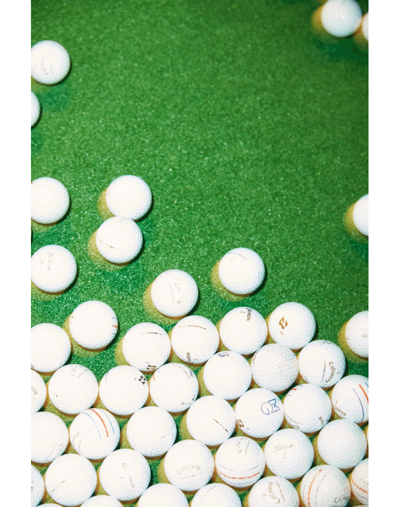
しかも、浦氏の場合は学んだ分野が幅広い。プレーに関与する肉体的、精神的な分野はもちろん、道具や芝の特性に至るまで、ゴルフレベルの向上に関わるありとあらゆる分野をフォローしています。
「きっと釣りのプロや自転車のプロに愛用する道具について話を振ると特性や強みを論理立てて説明できるでしょう。ただ、ゴルフのプロは基本、メーカーから支給されたクラブについて深くまで理解している人は多くありません。また、コースの芝も知っているのと知らないのとでは差が出ます。大きく分けて高麗芝とベント芝の２種類があり、前者は茎のひとつひとつが強いためボールが地面から浮いた状態になりやすい。片や後者は、柔らかく細いためフェアウェイであっても重さでボールが沈み込みます」。
「きっと釣りのプロや自転車のプロに愛用する道具について話を振ると特性や強みを論理立てて説明できるでしょう。ただ、ゴルフのプロは基本、メーカーから支給されたクラブについて深くまで理解している人は多くありません。また、コースの芝も知っているのと知らないのとでは差が出ます。大きく分けて高麗芝とベント芝の２種類があり、前者は茎のひとつひとつが強いためボールが地面から浮いた状態になりやすい。片や後者は、柔らかく細いためフェアウェイであっても重さでボールが沈み込みます」。
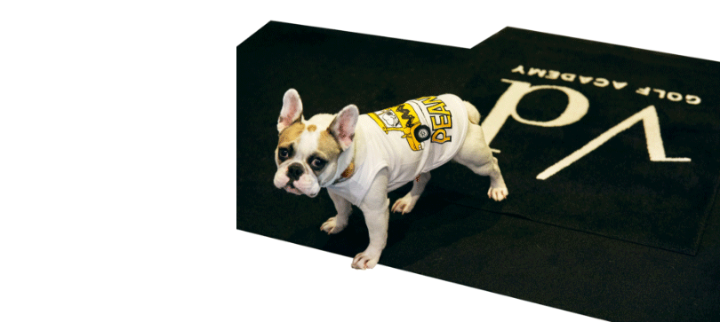
確固たる理論のもと行われるレッスンを経験した方は、その後の変化に驚きを隠せません。そして、今では行政、金融、エンタメなど、各業界の著名人の方々から、一般の方まで、あらゆる人が料金に納得し足を運びます。中には、あまりの結果へのコミットメントに「リーズナブル」と口にする人もいるほど。
「レッスンプロや理論自体の底上げをしたいっていうのが1番ですよね。レッスンプロが自分で自分の値段を下げ、価値を下げ、結局業界全体のレベルを下げてるわけです。ただ、ツアープロぐらい稼げるレッスンプロがいたら、目指す人も出てくるでしょうし向上心も芽生えるんじゃないかと思っています」。
「レッスンプロや理論自体の底上げをしたいっていうのが1番ですよね。レッスンプロが自分で自分の値段を下げ、価値を下げ、結局業界全体のレベルを下げてるわけです。ただ、ツアープロぐらい稼げるレッスンプロがいたら、目指す人も出てくるでしょうし向上心も芽生えるんじゃないかと思っています」。
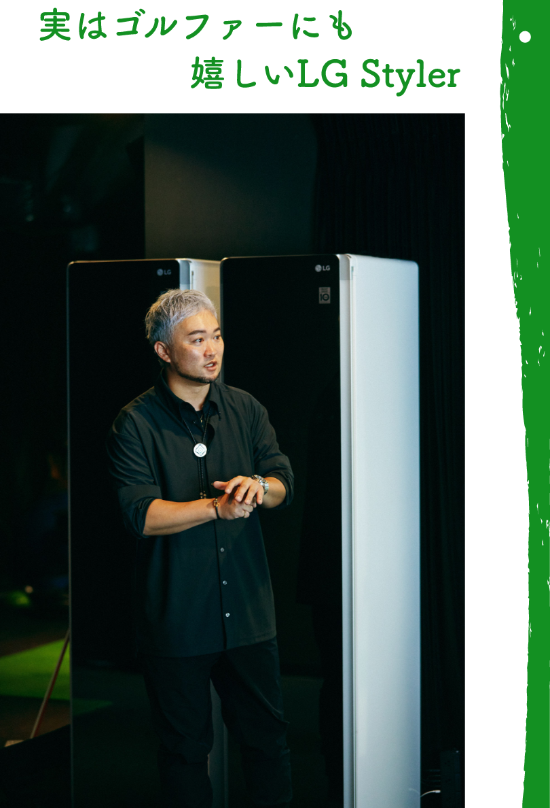
「ゴルフはもともと、入場する際にはちゃんとジャケットを着なければいけないスポーツなんですね。昨今、ドレスコードを気にせずラフにゴルフを楽しめる場所が増えましたし、それはそれでいいことだと思います。ただ、だからこそ個人的には襟元を正したい。そのため、僕はいつもゴルフ場へ行く際にはジャケットを着用します。その分、頻繁にクリーニングへ出していましたし、仕事が立て込んでくるとそのままクローゼットへ、なんてケースもこれまでは少なくありませんでした」。
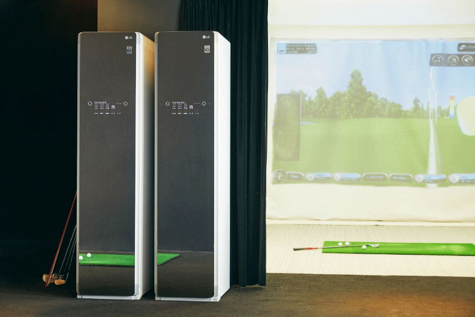
ただ、LG Stylerを取り入れてからそのストレスからも解放されたという。
「クリーニング屋へ出す、取りに行くというロスと手間が解消されただけでも自由を感じますね。しかも、ふかふかの着用感を感じながらゴルフ場へ向かうわけですから、気分良く最初のティーグラウンドに立つことができる。ドライバーのヘッドカバーなど、なかなかケアするのが難しいものに対応してくれるのも嬉しいですね」。
「クリーニング屋へ出す、取りに行くというロスと手間が解消されただけでも自由を感じますね。しかも、ふかふかの着用感を感じながらゴルフ場へ向かうわけですから、気分良く最初のティーグラウンドに立つことができる。ドライバーのヘッドカバーなど、なかなかケアするのが難しいものに対応してくれるのも嬉しいですね」。
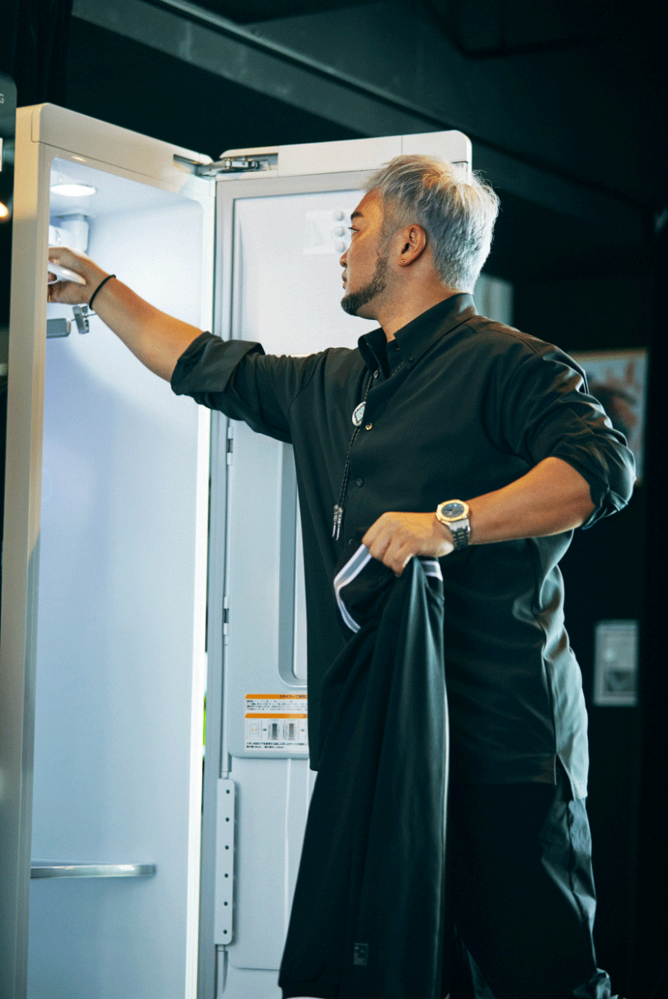
しかも、ゴルファーにとっては昔から悩みのタネだった天敵にも対応してくれるとか。
「プレーした方なら分かっていただけると思うのですが、ゴルフ場の多くはとにかく花粉がひどい。それを室内に持ち込むのはいただけませんよね。LG Stylerはその点もケアしてくれるので安心です」。
訪れる生徒さんからの評判も上々のようだ。
「それこそ来ていただいた生徒さんからも、ふかふかの綺麗な状態の洋服を着て帰るホスピタリティは好評で、中には普通に気に入って購入されたお客さんも少なくありません。最初は、焼肉などを食べに行っても匂いがすぐ取れるという触れ込みを聞いて興味を持ちました。ただ、導入して気付いたのは、気持ちのスイッチになるということ。練習前と後のスイッチ役になるんです。生徒さんを見ていると、入り口から入って来て、LG Stylerの扉を開け、着てきた服を脱いでハンガーに掛ける。その時点で、表情が変わってるんですよね」。
「プレーした方なら分かっていただけると思うのですが、ゴルフ場の多くはとにかく花粉がひどい。それを室内に持ち込むのはいただけませんよね。LG Stylerはその点もケアしてくれるので安心です」。
訪れる生徒さんからの評判も上々のようだ。
「それこそ来ていただいた生徒さんからも、ふかふかの綺麗な状態の洋服を着て帰るホスピタリティは好評で、中には普通に気に入って購入されたお客さんも少なくありません。最初は、焼肉などを食べに行っても匂いがすぐ取れるという触れ込みを聞いて興味を持ちました。ただ、導入して気付いたのは、気持ちのスイッチになるということ。練習前と後のスイッチ役になるんです。生徒さんを見ていると、入り口から入って来て、LG Stylerの扉を開け、着てきた服を脱いでハンガーに掛ける。その時点で、表情が変わってるんですよね」。
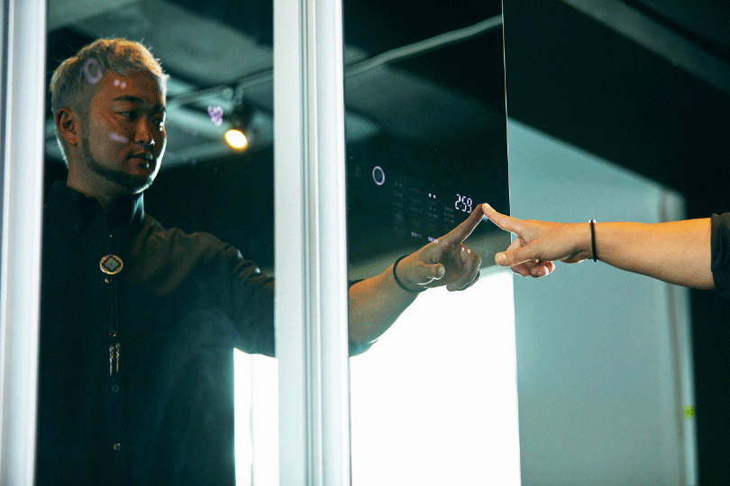
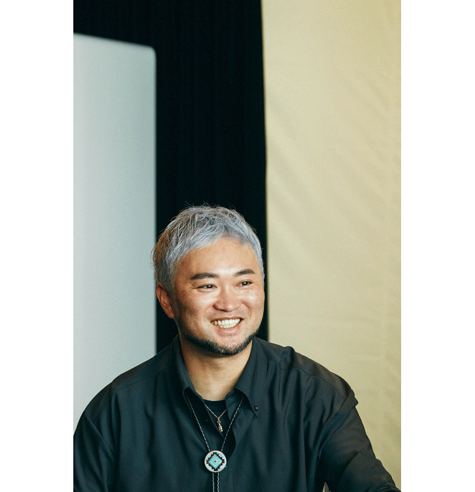

YouTube
1985年生まれ。学生時代からゴルフを始め全国を舞台に活躍。その後、諸事情により一度はゴルフから距離を置き、３年もの間一般企業にて社会経験を積む。その間、物理学、スポーツ力学、ゴルフクラブのメカニズム、心理学などを学び、独自のゴルフ理論を構築。2009年よりレッスンプロとして活動を始め、今ではプロ、アマを問わず多くのゴルファーを指導。最大限の結果を得られるその指導から、角界の多くの著名人も顧客リストに名を連ねる。
Interview & Text: Ryo Kikuchi